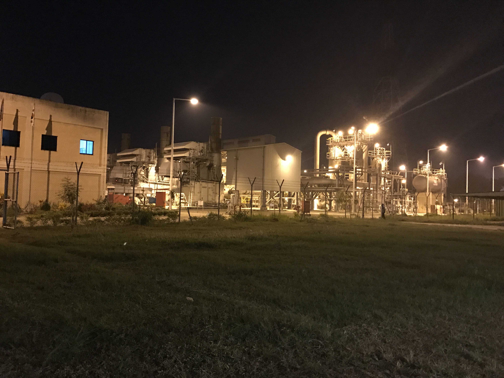

Gas Transmission & Process Plant
Operations Engineering
Hands-on industrial experience in high-pressure gas transmission systems, focusing on operations, maintenance, process reliability, and system-level engineering.

Overview
Worked at Gas Transmission Company Limited (GTCL) in a high-pressure natural gas transmission and processing facility. Progressed from Mechanical Maintenance & Operations Engineer to Lead Shift Engineer, managing real-time plant operations, troubleshooting, and cross-functional technical teams.
This experience developed a strong foundation in process engineering, system integration, and reliability-driven operations, directly applicable to high-precision manufacturing environments such as semiconductor fabrication.
Roles & Responsibilities
Mechanical Maintenance & Operations Engineer (2 Years)
- Performed preventive and corrective maintenance on gas transmission and processing systems
- Operated and maintained compressors, scrubbers, valves, and pipeline networks
- Executed controlled startup and shutdown procedures for critical process equipment
- Diagnosed issues related to pressure fluctuations, flow instability, and leakage
Lead Shift Engineer (1 Year)
- Led a team of 3 engineers and 5 technicians in 24/7 plant operations
- Managed shift-based operations ensuring system stability and safety compliance
- Coordinated rapid response during abnormal operating conditions
- Optimized operational decisions under real-time process constraints
Key Systems Worked On
- Gas Scrubber & Separation Systems
- High-Pressure Transmission Pipelines
- Inlet / Outlet Manifolds & Flow Distribution Networks
- Gas & Air Compressor Systems
- Process Instrumentation & Control Panels


Technical Contributions
- Diagnosed and resolved pipeline pressure inconsistencies improving system stability
- Identified leakage sources and implemented corrective sealing strategies
- Reduced equipment downtime through optimized preventive maintenance scheduling
- Performed root cause analysis (RCA) on recurring system failures
- Improved operational efficiency through process observation and corrective actions


Control & Instrumentation Exposure
- Worked with pressure gauges, transmitters, and flow measurement systems
- Interacted with PLC-based control systems for process monitoring
- Analyzed real-time data for operational decision-making
- Maintained stable process conditions through parameter monitoring

Engineering Impact
- Enhanced system reliability in a continuous 24/7 operation environment
- Developed strong troubleshooting capability under high-pressure conditions
- Improved operational response time during critical system deviations
- Built experience in large-scale process integration and system dependency
Skills Developed
- Process Engineering & Industrial System Analysis
- Reliability & Maintenance Engineering
- Root Cause Analysis (RCA) & Failure Diagnosis
- High-Pressure System Operations
- Process Monitoring & Control
- Team Leadership & Shift Management
- Real-Time Troubleshooting & Decision Making
Relevance to Semiconductor Process Engineering
- Gas flow, pressure control, and distribution systems analogous to fab gas delivery systems
- Experience with continuous process environments requiring high uptime and stability
- Strong foundation in process troubleshooting and yield-impacting failure analysis
- Understanding of integrated systems similar to tool-to-tool process interactions
- Exposure to safety-critical operations and contamination control principles